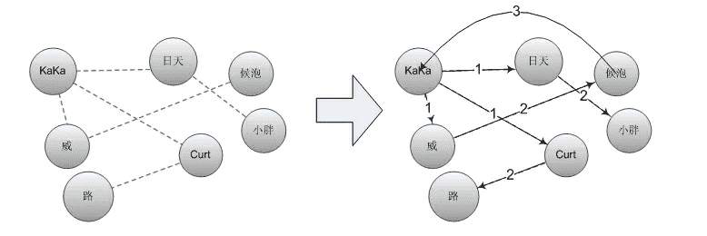

P2P 技术科普
基本都是照抄这下面两个链接，进行稍微改动，非常感谢！转载请务必转这两个地址！
一、P2P 基本原理
在 P2P 技术之前，网络中的所有人大多都是通过一种叫做 “客户端 / 服务器” 的模式被组织在一起。一个服务器向很多客户提供服务。
举个例子吧： kaka 有一台机子，里面存有全套的央视春晚，他想把他的挚爱分享给所有人。于是不论是通过广告还是别的什么方式，很多人知道了 kaka 有这个资源的消息。通过网络，他们就可以向 kaka 建立连接并从他的机子上下载。这样就形成了一个以 kaka 为中心的小型网络。这当中，kaka 是服务器，其他人都是客户端。
我们来看看这种模式天生的一些弱点：
1. 服务器扮演的角色太重了，网络的一切都指着他。假如 kaka 不小心把电脑从 6 楼扔下去，整个网络就都瘫痪了。请注意，想要把一个服务器弄失灵的方法太多了，所以使用这中模式的风险是比较大的。
2. 网络的资源利用率低下。所有客户都只能从服务器那获得资源，因为他们之间不认识，甚至不知道相互的存在。然而，现实中，可能每个人都有自己独门的资源，比如日天有无数游戏，威哥有无数动漫电影……. 总之，整个网络的资源可能是服务器的无数倍。但是苦无客户端之间没有交流的渠道，所以资源无法互通。
3. 关于完美服务器的假设，基本不成立。
P2P 技术就是要解决上述的问题已达到如下的效果： 所有人的资源都可以被别人找到并使用。没有哪个人特别重要，人人平等（peer-to-peer 就是这个意思），任何一个人失灵都不会导致网络的死亡。
这里以 Gnutella 为例，对 P2P 基本原理进行介绍。 Gnutella 是一种典型的 P2P 网络，很具代表性，以其为基础的软件有 Limewire。这种网络里，没有服务器。用户之间任意连接：

Kaka 认识 ‘日天’‘curt’‘威’， 日天认识‘小胖’，威认识‘候泡’，Curt 认识 ‘路’。当然真正的网络有至少有成百上千个用户，这里只是展示一个小的局部。
这个网络如何工作呢？比如 kaka 想要找一首叫‘走进新时代’的歌。一个基本交易要经过如下几步：
1. kaka 给他的邻居们每人发一个请求消息，‘你们丫谁有走进新时代？’
2. 日天，威，curt 吐血，‘谁 tm 听这歌啊，我没有’。于是把 kaka 的消息转发给他们的邻居：日天发给小胖，威发给候泡，curt 发给路总。
3. 当 kaka 邻居的邻居们收到这个消息后，同样，先看看自己有没有。比如，候泡有这个歌，他就可以给 kaka 发个消息：‘爷这有，来下吧’
4. 卡卡于是可以直接去候泡那下载。
很多人说在 p2p 里面，所有人即是服务器又是客户端。应该这样理解，比如，kaka 在上例中就是个客户端。 但当有人要想要春晚的时候，只要那人的请求消息能被转到 kaka 这，kaka 就可以成为一个服务器。
最后要说的是 P2P 的现状以及应用。目前 P2P 与传统的‘客户端 / 服务器’模式可以说分庭抗礼，互为补充。那么为什么没能取而代之呢？因为，P2P 也有自身的弱点，其中包括：
1. 占带宽（50% 以上的网络带宽都是 P2P 占用的，搜索方法不灵）
2. 安全（不具体解释了，太专业了，总之和加密那些东西有关）
3. 诚信（没有中央控制，你传个毛片也可以告诉你是新闻联播）
4. 自私（我什么都不付出，有也说没有）
5. 知识产权保护（在中国相当于盗版的集散地）等等。 至于这些问题的对策以及其不足，以后会做专题介绍。
二、P2P 的发展
下面，简要介绍一下 P2P 技术的发展。
第一代、Napster
这一代的 p2p 只是把资源从服务器上拿掉了。中央服务器上只有一个目录。这个目录记录着哪个用户有哪些资源。要建立这样的一个目录，要求网络中的每个人都要告诉这个服务器：他有什么资源。
1. Kaka 发一个资源请求向中央服务器。
2. 这个服务器然后检索目录，并告诉 Kaka，日天有他要的东西。
3. Kaka 直接去找日天下东西。
这样做，解决了高带宽需求（服务器只需要转发一些消息，而不用真格的提供资源），低资源利用率的问题（网络里谁都可以发挥作用了）。但是，他仍然面临严重的单一故障点风险。同时，napster 的出现严重挑战了知识产权法，并最终导致其在 2001 年被勒令关闭。
第二代、非结构化 P2P 和 结构化 P2P
Napster 帝国的坍塌，导致了江湖上群雄并起，老的规矩也就法不责众了，其中 Gnutella 等非结构的 P2P 脱颖而出。非结构化说白了就是，用户之间瞎连，没有规定谁必须和谁有连接，基本随机。其基本搜索方法是地毯式的，如果这样的搜索能够遍及整个网络。那么，只要资源存在就一定能一网打尽。
但是上天要求每一个用户都要给自己资源请求加一个限制，于是每个资源请求都只能走几步就必须停了，即使什么都还没找到。因为地毯式的搜索要消耗大量的网络资源，比如，平均一个人有 4 个邻居，如果资源请求的限制为 5. 那么一共需要 4+42+43+44+45=1364 个信息，每个信息多大呢？大概几 k 到几十 k，也就是说一个信息就至少几 m。一个人一个信息就这么大了，想想一个大网络，每人十几个邻居，限制提高到 7 或 8. 这就是为什么中国很多地方，尤其是网吧限制 p2p. 因为他们可怜的带宽都被 p2p 的请求信息占用了。
当然，p2p 的设计者们都看到了问题，于是提出了很多新的搜索方法。这些方法可以分成两种：
1. 根据以前的搜索信息对以后的搜索进行预测；根据经验的搜索准确率可能会高一点，但是这种方法要求每个用户都要建一些表来记录以前的数据，而且每次发送或接到请求都要经过一系列的计算才能决定发给哪个邻居。而且程序上难以实现，更重要的是平均准确率并不比瞎找好很多。这里就不多做介绍了。
2. 瞎找，碰运气。介绍两种最常见的：
- K-walkers: 第一个人先把消息发给 k 个邻居，具体多少都自己定。 然后从第一轮邻居开始都只把消息转发给他们的一个邻居。
- 水纹式（涟漪式）：先定一个限制。第一个人先发给第一层的邻居。如果第一层不灵，他们再发给他们的邻居。一旦找到资源就不再继续了。这样的话最坏的情况就是原始的地毯式。好点的情况就是，消息没到限制就找到了相应的资源，就停了。
这种非结构的 p2p 的优点在于，操作简单，完全不需要中央控制，所以又称为存（纯）p2p。其缺点同样明显，要么牺牲搜索成功率，要么牺牲带宽占有量。
于是又有人提出了结构化的 P2P。数学的东西我就不说了，基本的思想就是：
1. 每个用户，资源都得有个名字。
2. 有一种数学加密方法，对这些名字加密。且保证如果名字不同，那么得到的结果就不同。
3. 如一资源和一用户加密后结果接近，就把该资源的地址放到相应的用户身上。
举个例子：
有三个人，日天，kaka，威哥。三个资源：“一剪梅.mp3”,“八荣八耻歌歌词.txt”,“xxx.avi”，对这六个东西加密后分别得到： 100，200，3000， 3002， 233，98，‘xxx.avi’的下载地址就会被分配到‘日天’的机子上，于是当你想搜索 “xxx.avi”，你的消息就会通过某种方法被传到到日天那。
这样，结构化的 P2P 就可以保证，只要网络里有相应的资源，就一定能找到。但是由于其程序实现的难度，加之维护网络所需的投入太大，并不被经常使用。尽管他有很漂亮的数据。
当然还有第三代的，以后再做专题。
三、BT 工作原理简介
2002 年左右，程小胖告诉我有一种软件可以下片，人越多越快。很神奇。请注意，并不是所有的 P2P 技术都能做到这点，其他的 P2P 基本上只是提高网络资源的利用率，但是，网络中的每一单买卖都仍然采用，1 对 1 的客户端服务器模式。回顾一下之前讲过的 P2P，去掉技术细节，做一单买卖可以这样描述：
1. 有人向网络发一个资源请求（请求者）。有很多种搜索方法可供选择。
2. 当一个有该的资源的人（提供者）收到这个的请求，他会设法通知请求者：他那有其想要的东西。
3. 于是请求者去找提供者下载。
这样做的一个缺点就是，比如，我选择了一个比较矬的提供者，而那人的带宽只有 30k，然而网络中还有很多潜在提供者，可能有的人能达到 30m。但是由于我在选择时只无法对对方的带宽做出判断而无福消受。
这样做还有一个致命的漏洞！比如，我收到一个关于 “海贼王” 的请求，而且我有全套。按理说我应该通知请求者，让他来我这下。但是，让他来我这里下东西，对我来说，除了占我带宽，增加我中毒的风险，没有任何的好处。那我凭什么主动邀请他来？？我何不装 ytd，对该请求视而不见？非常不幸的是，跟我有相同想法的孙子在一般 p2p 网络里面占了大多数，甚至绝大多数。这就是搭便车问题（free riding）。所幸还是有一些大侠的，无偿的提供着大量资源，他们的存在使得那些一般的 P2P 得以侥幸存活。
其实，如果仅仅依赖活雷锋们，P2P 就失去了其人人平等的意义。大侠们回复了网络中绝大多数的请求，于是人人都愿意与这些人建立连接，因为这样能更快的找到资源。于是这些大侠们就成了变得越来越红，网络的拓扑结构将会发生变化。
这样的变化很不好，因为 P2P 又逐渐变成了客户端 / 服务器模式了。
于是，不论是学术界还是产业界都意识到，如果没有一种鼓励机制来刺激提供者，P2P 将失去其天生的魅力。在众多解决方案中 BT 脱颖而出，迅速发展了起来。BT 是简称，在国外可能会产生歧义，如 British Telecommunications 等等。所以大家尽量还是用全称，尤其是和外国人说的时候 Bit-Torrent。有人说 BT 是第三代的 P2P，我认为这是因为他把 P2P 的理念更加深入的实现了。
在 BitTorrent 当中，所有的资源都被切成很小的等份（碎片）。这里，你不需要知道怎么切，只需要知道有一种技术可以把一个文件切成很多小等份，还能把这些等份再重新的组装。在这个技术的支持下，bittorrent 中所有有相同请求的用户可以相互传资源的碎片。而且谁传的多，谁就将获得更多。具体技术如下：
- 首先，有同样资源请求的人怎么能相互认识呢？bittorrent 中每一个资源都对应有一个叫 tracker 的服务器。只要你对一个资源有意思，你就必须先联系这个资源相应的 tracker。或者你想要共享一个资源你也必须联系 tracker。这样的话，tracker 就掌握着整个网络中谁想要这个资源以及谁有这个资源。当然，为了节约，一个 tracker 可以负责多种资源。
- 那么，怎么找到 tracker 呢？大家可能听说过做种子，每个有完整资源的人都可以做种子，其实就是生成一个后缀是.torrent 的文件。每一款 bittorrent 应用软件都会自动帮你生成，所以不用担心。你只要知道这个文件中包括两部分内容：
1，tracker的地址。2，相关资源的一些属性，比如大小，名字等等。这个 torrent 文件一般都可以发布在网上，比如某某人的博客，或者论坛上。 - 于是，大家可以从网上找到 torrent 文件，并从中知道 tracker 在哪。再通过联系 tracker 得到一个名单，其中包括一部分正在下载或有完整资源的用户。这时候，你就可以与这些人建立链接，并分别从他们身上要不同的碎片。当然要相同资源的人越多，你可以建立连接的人就越多，也就更可能早日得到所有碎片。
- 还有一点很重要就是，bittorrent 有自己的鼓励机制，就是说，你做的贡献大就会被鼓励，你不做贡献就会被惩罚。具体的操作是，每个人在下载的同时也上传，比如说我正在下载完分片一之后，同时也可以把分片一传给其他正在下载的用户。传给谁呢？谁给我给的多，我就传给谁。而且我只传个前 4 名的（视具体软件具体分析，也可能是前 8 名或其他）。
四、BT 的缺陷和改进
Bittorrent 大概的工作原理就是这样了，还有些细节这里不多说了。我个人认为 Bittorrent 的设计还是很不错的，但是其只适用于文件共享，或视频共享。然而网络中的资源又何止电影音乐？？绝大多数的资源是不可分的，bittorrent 的局限性还是相当大！ 另一点可悲的是，大多数宽带用户是 ADSL，也就是说他们的下载上传的带宽上限差别很大，比如，下载最大 2m/s，上传却只有 100k/s。这也限制了 bittorrent 的发挥。
此外可以看出 Tracker 服务器在 BT 网络中充当着非常重要的作用，和传统的客户端/服务器模式一样，Tracker 服务器同样会存在单点故障问题。所以在 BT 技术的基础上，后来又衍生出 DHT 网络和磁力链接技术，DHT 全称为分布式哈希表（Distributed Hash Table），是一种分布式存储方法。
DHT网络是 Tracker-less 的，不依赖于其他的 Tracker 服务器。在这种情况下，每个客户端负责一个小范围的路由，并负责存储一小部分数据，从而实现整个 DHT 网络的寻址和存储。使用支持该技术的 BT 下载软件，用户无需连上 Tracker 就可以下载，因为软件会在 DHT 网络中寻找下载同一文件的其他用户并与之通讯，开始下载任务。
在网络中定位资源最简单的方法是 URL（统一资源定位符），它是通过资源的位置来进行定位。而在 DHT 网络中，则是使用 URN（统一资源名称）来进行定位，磁力链接就是基于文件内容的散列函数值来链接到特定文件，生成一个唯一的文件识别符，从而在DHT网络中定位并下载文件。 一个最简单的磁力链接格式如下：magnet:?xt=urn:btih:51df6808c739174c8f264701ba94460c5238d6ce，其中 urn 为统一资源名称，btih 是 BitTorrent Info Hash 的缩写，是 BitTorrent 使用的 Hash 函数。除了 btih 还可以是其他类型的 Hash函数，但不如 btih 用的多。这一串长度为 40 的字符串正是文件内容的 Hash，BT 下载工具就根据这个 Hash 在 DHT 网络中定位下载文件。